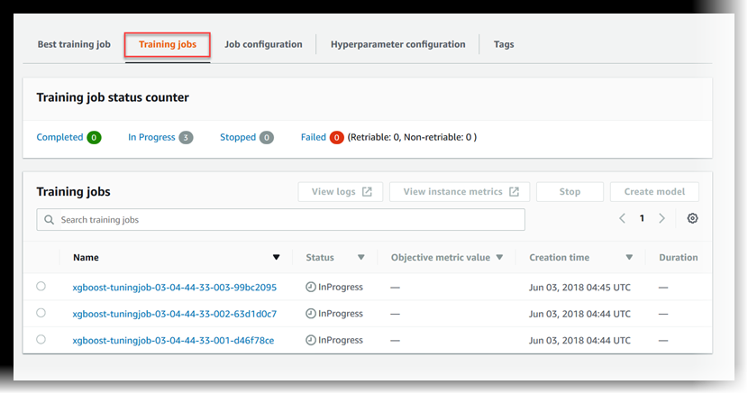

Configure and Launch a Hyperparameter Tuning Job
A hyperparameter is a high-level parameter that influences the learning process during model training. To get the best model predictions, you can optimize a hyperparameter configuration or set hyperparameter values. The process of finding an optimal configuration is called hyperparameter tuning. To configure and launch a hyperparameter tuning job, complete the steps in these guides.
Topics
Settings for the hyperparameter tuning job
To specify settings for the hyperparameter tuning job, define a JSON object when you
create the tuning job. Pass this JSON object as the value of the
HyperParameterTuningJobConfig parameter to the CreateHyperParameterTuningJob API.
In this JSON object, specify the following:
In this JSON object, you specify:
-
HyperParameterTuningJobObjective– The objective metric used to evaluate the performance of the training job launched by the hyperparameter tuning job. -
ParameterRanges– The range of values that a tunable hyperparameter can use during optimization. For more information, see Define Hyperparameter Ranges -
RandomSeed– A value used to initialize a pseudo-random number generator. Setting a random seed will allow the hyperparameter tuning search strategies to produce more consistent configurations for the same tuning job (optional). -
ResourceLimits– The maximum number of training and parallel training jobs that the hyperparameter tuning job can use.
Note
If you use your own algorithm for hyperparameter tuning, rather than a SageMaker built-in algorithm, you must define metrics for your algorithm. For more information, see Define metrics Specify environment variables.
The following code example shows how to configure a hyperparameter tuning job using
the built-in XGBoost
algorithm. The code example shows how to define ranges for the eta,
alpha, min_child_weight, and max_depth
hyperparameters. For more information about these and other hyperparameters see XGBoost
Parameters
In this code example, the objective metric for the hyperparameter tuning job finds the
hyperparameter configuration that maximizes validation:auc. SageMaker built-in
algorithms automatically write the objective metric to CloudWatch Logs. The following code example
also shows how to set a RandomSeed.
tuning_job_config = { "ParameterRanges": { "CategoricalParameterRanges": [], "ContinuousParameterRanges": [ { "MaxValue": "1", "MinValue": "0", "Name": "eta" }, { "MaxValue": "2", "MinValue": "0", "Name": "alpha" }, { "MaxValue": "10", "MinValue": "1", "Name": "min_child_weight" } ], "IntegerParameterRanges": [ { "MaxValue": "10", "MinValue": "1", "Name": "max_depth" } ] }, "ResourceLimits": { "MaxNumberOfTrainingJobs": 20, "MaxParallelTrainingJobs": 3 }, "Strategy": "Bayesian", "HyperParameterTuningJobObjective": { "MetricName": "validation:auc", "Type": "Maximize" }, "RandomSeed" : 123 }
Configure the training jobs
The hyperparameter tuning job will launch training jobs to find an optimal
configuration of hyperparameters. These training jobs should be configured using the SageMaker
CreateHyperParameterTuningJob API.
To configure the training jobs, define a JSON object and pass it as the value of the
TrainingJobDefinition parameter inside
CreateHyperParameterTuningJob.
In this JSON object, you can specify the following:
-
AlgorithmSpecification– The registry path of the Docker image containing the training algorithm and related metadata. To specify an algorithm, you can use your own custom built algorithm inside a Dockercontainer or a SageMaker built-in algorithm (required). -
InputDataConfig– The input configuration, including theChannelName,ContentType, and data source for your training and test data (required). -
InputDataConfig– The input configuration, including theChannelName,ContentType, and data source for your training and test data (required). -
The storage location for the algorithm's output. Specify the S3 bucket where you want to store the output of the training jobs.
-
RoleArn– The Amazon Resource Name (ARN) of an AWS Identity and Access Management (IAM) role that SageMaker uses to perform tasks. Tasks include reading input data, downloading a Docker image, writing model artifacts to an S3 bucket, writing logs to Amazon CloudWatch Logs, and writing metrics to Amazon CloudWatch (required). -
StoppingCondition– The maximum runtime in seconds that a training job can run before being stopped. This value should be greater than the time needed to train your model (required). -
MetricDefinitions– The name and regular expression that defines any metrics that the training jobs emit. Define metrics only when you use a custom training algorithm. The example in the following code uses a built-in algorithm, which already has metrics defined. For information about defining metrics (optional), see Define metrics Specify environment variables. -
TrainingImage– The Dockercontainer image that specifies the training algorithm (optional). -
StaticHyperParameters– The name and values of hyperparameters that are not tuned in the tuning job (optional).
The following code example sets static values for the eval_metric,
num_round, objective, rate_drop, and
tweedie_variance_power parameters of the XGBoost Algorithm built-in algorithm.
Name and launch the hyperparameter tuning job
After you configure the hyperparameter tuning job, you can launch it by calling the
CreateHyperParameterTuningJob API. The following code example uses
tuning_job_config and training_job_definition. These were
defined in the previous two code examples to create a hyperparameter tuning job.
tuning_job_name = "MyTuningJob" smclient.create_hyper_parameter_tuning_job(HyperParameterTuningJobName = tuning_job_name, HyperParameterTuningJobConfig = tuning_job_config, TrainingJobDefinition = training_job_definition)
View the Status of the Training Jobs
To view the status of the training jobs that the hyperparameter tuning job launched
-
In the list of hyperparameter tuning jobs, choose the job that you launched.
-
Choose Training jobs.
 -
View the status of each training job. To see more details about a job, choose it in the list of training jobs. To view a summary of the status of all of the training jobs that the hyperparameter tuning job launched, see Training job status counter.
A training job can be:
-
Completed—The training job successfully completed. -
InProgress—The training job is in progress. -
Stopped—The training job was manually stopped before it completed. -
Failed (Retryable)—The training job failed, but can be retried. A failed training job can be retried only if it failed because an internal service error occurred. -
Failed (Non-retryable)—The training job failed and can't be retried. A failed training job can't be retried when a client error occurs.
Note
Hyperparameter tuning jobs can be stopped and the underlying resources deleted, but the jobs themselves cannot be deleted.
-
View the Best Training Job
A hyperparameter tuning job uses the objective metric that each training job returns to evaluate training jobs. While the hyperparameter tuning job is in progress, the best training job is the one that has returned the best objective metric so far. After the hyperparameter tuning job is complete, the best training job is the one that returned the best objective metric.
To view the best training job, choose Best training job.
To deploy the best training job as a model that you can host at a SageMaker endpoint, choose Create model.
Next Step